Hystory of computers
A Brief Timeline
Created by: CHIEFS CIPA
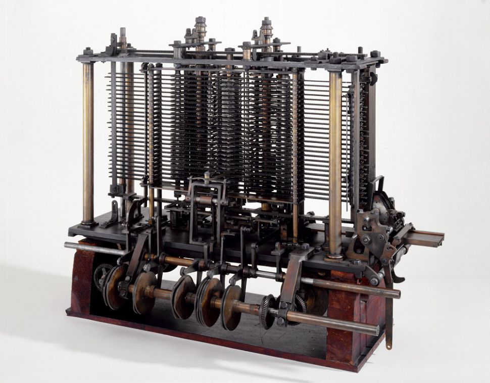The computer was born not for entertainment or email but out of a need to solve a serious number-crunching crisis. By 1880, the U.S. population had grown so large that it took more than seven years to tabulate the U.S. Census results. The government sought a faster way to get the job done, giving rise to punch-card based computers that took up entire rooms. Today, we carry more computing power on our smartphones than was available in these early models. The following brief history of computing is a timeline of how computers evolved from their humble beginnings to the machines of today that surf the Internet, play games and stream multimedia in addition to crunching numbers.
1801
In France, Joseph Marie Jacquard invents a loom that uses punched wooden cards to automatically weave fabric designs. Early computers would use similar punch cards.
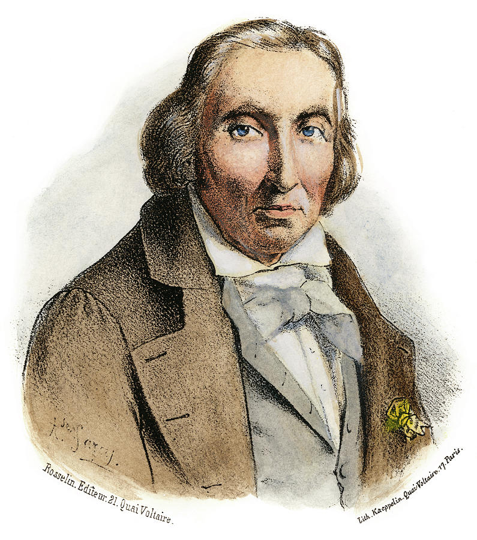1822
English mathematician Charles Babbage conceives of a steam-driven calculating machine that would be able to compute tables of numbers. The project, funded by the English government, is a failure. More than a century later, however, the world's first computer was actually built.
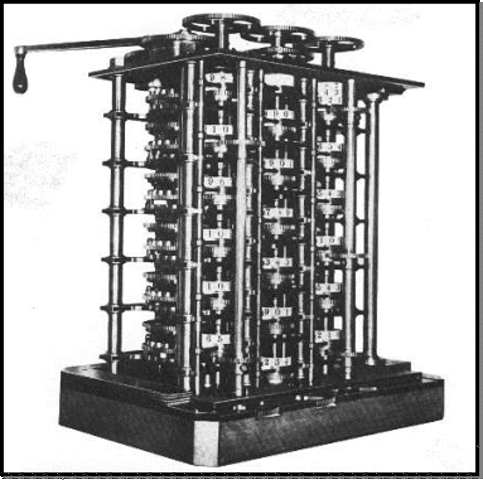1890
Herman Hollerith designs a punch card system to calculate the 1880 census, accomplishing the task in just three years and saving the government $5 million. He establishes a company that would ultimately become IBM.
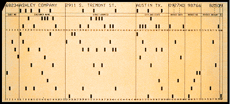1936
Alan Turing presents the notion of a universal machine, later called the Turing machine, capable of computing anything that is computable. The central concept of the modern computer was based on his ideas.
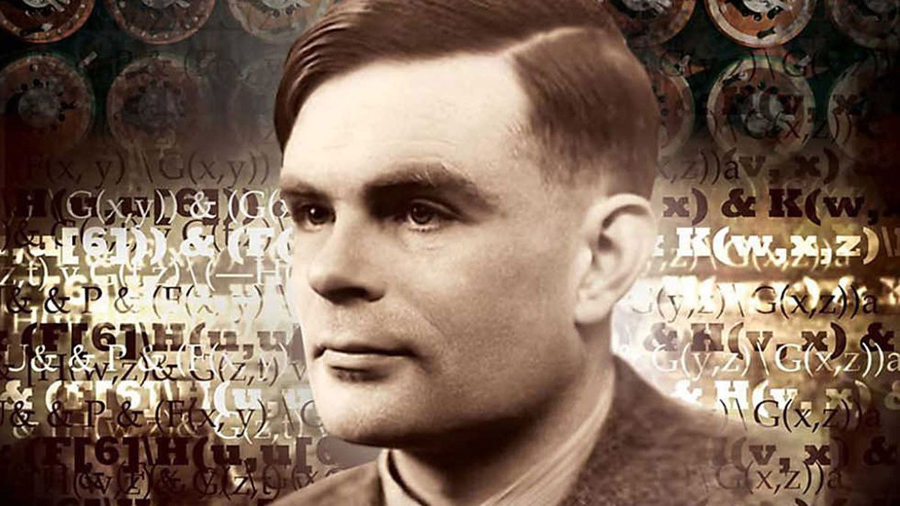1937
J.V. Atanasoff, a professor of physics and mathematics at Iowa State University, attempts to build the first computer without gears, cams, belts or shafts.
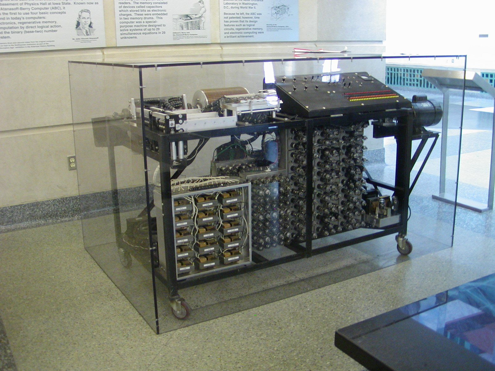1939
Hewlett-Packard is founded by David Packard and Bill Hewlett in a Palo Alto, California, garage, according to the Computer History Museum.
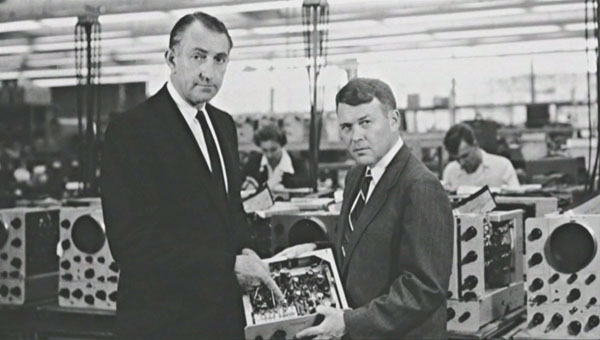1941
Atanasoff and his graduate student, Clifford Berry, design a computer that can solve 29 equations simultaneously. This marks the first time a computer is able to store information on its main memory.
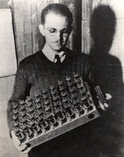1943 - 1944
Two University of Pennsylvania professors, John Mauchly and J. Presper Eckert, build the Electronic Numerical Integrator and Calculator (ENIAC). Considered the grandfather of digital computers, it fills a 20-foot by 40-foot room and has 18,000 vacuum tubes.
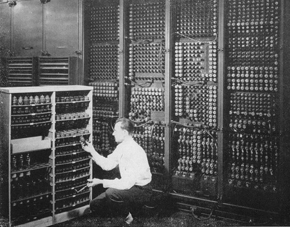1946
Mauchly and Presper leave the University of Pennsylvania and receive funding from the Census Bureau to build the UNIVAC, the first commercial computer for business and government applications.

1947
William Shockley, John Bardeen and Walter Brattain of Bell Laboratories invent the transistor. They discovered how to make an electric switch with solid materials and no need for a vacuum.
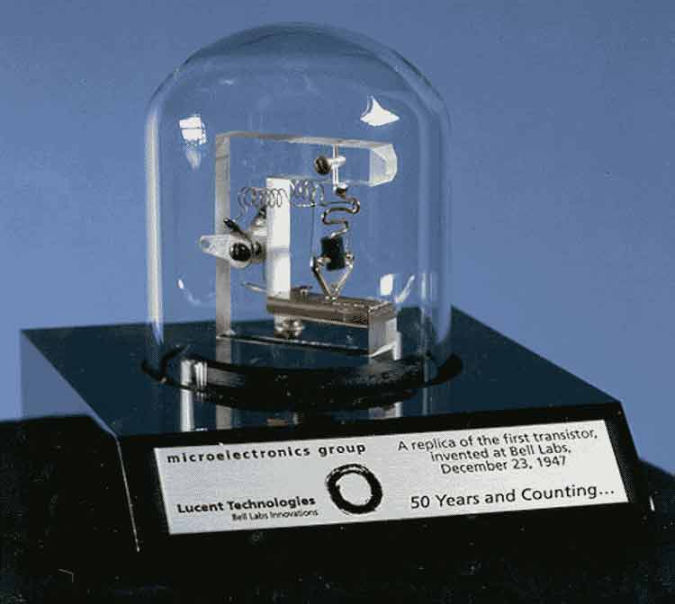1953
Grace Hopper develops the first computer language, which eventually becomes known as COBOL. Thomas Johnson Watson Jr., son of IBM CEO Thomas Johnson Watson Sr., conceives the IBM 701 EDPM to help the United Nations keep tabs on Korea during the war.
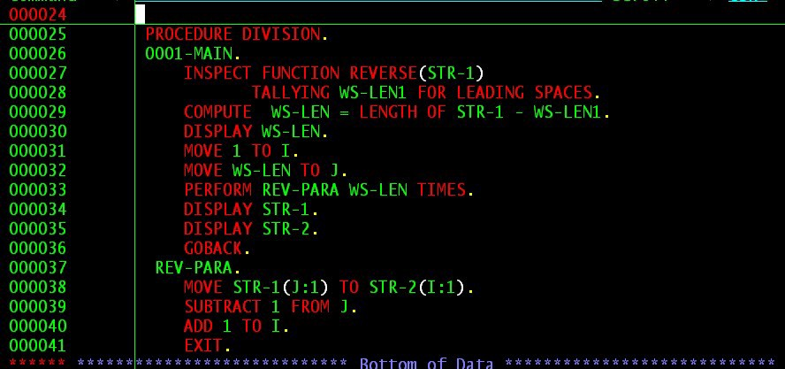1958
Jack Kilby and Robert Noyce unveil the integrated circuit, known as the computer chip. Kilby was awarded the Nobel Prize in Physics in 2000 for his work.
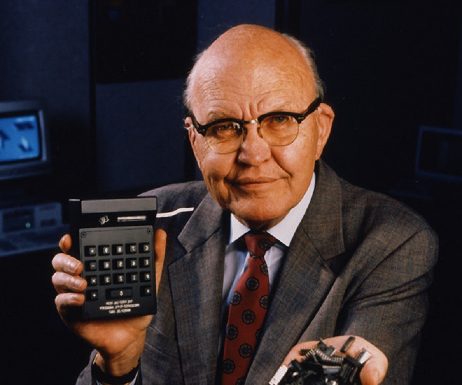1964
Douglas Engelbart shows a prototype of the modern computer, with a mouse and a graphical user interface (GUI). This marks the evolution of the computer from a specialized machine for scientists and mathematicians to technology that is more accessible to the general public.
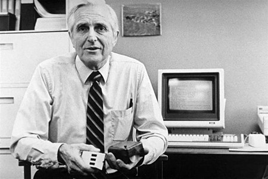1970
The newly formed Intel unveils the Intel 1103, the first Dynamic Access Memory (DRAM) chip.
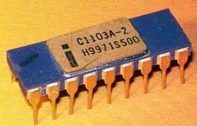1973
Robert Metcalfe, a member of the research staff for Xerox, develops Ethernet for connecting multiple computers and other hardware.
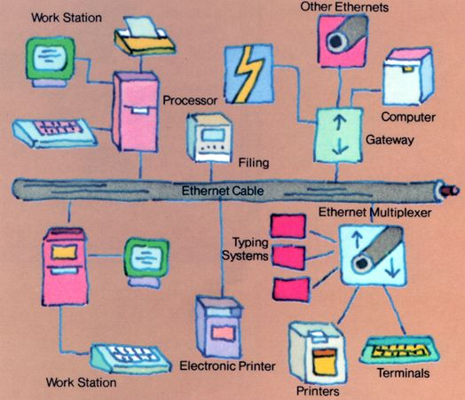1975
The January issue of Popular Electronics magazine features the Altair 8080, described as the "world's first minicomputer kit to rival commercial models." Two "computer geeks," Paul Allen and Bill Gates, offer to write software for the Altair, using the new BASIC language. On April 4, after the success of this first endeavor, the two childhood friends form their own software company, Microsoft.
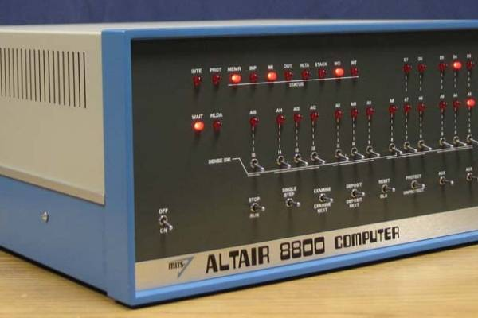1976
Steve Jobs and Steve Wozniak start Apple Computers on April Fool's Day and roll out the Apple I, the first computer with a single-circuit board, according to Stanford University.
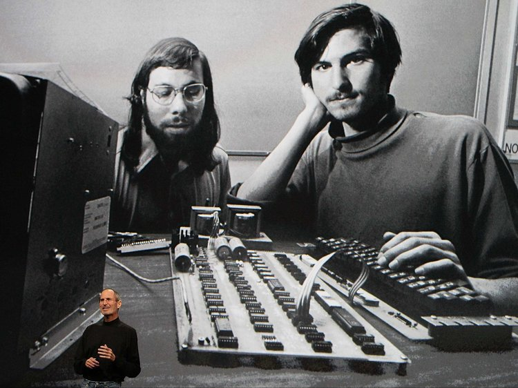1977
Jobs and Wozniak incorporate Apple and show the Apple II at the first West Coast Computer Faire. It offers color graphics and incorporates an audio cassette drive for storage.
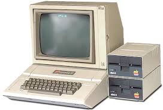1981
The first IBM personal computer, code-named "Acorn," is introduced. It uses Microsoft's MS-DOS operating system. It has an Intel chip, two floppy disks and an optional color monitor. Sears & Roebuck and Computerland sell the machines, marking the first time a computer is available through outside distributors. It also popularizes the term PC.
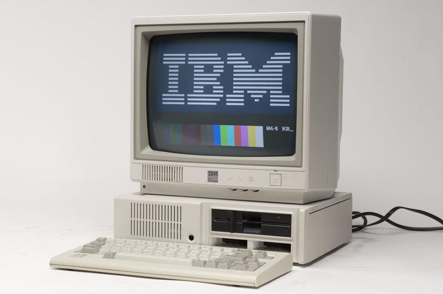1985
Microsoft announces Windows, according to Encyclopedia Britannica. This was the company's response to Apple's GUI. Commodore unveils the Amiga 1000, which features advanced audio and video capabilities.
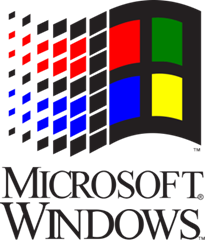1994
PCs become gaming machines as "Command & Conquer," "Alone in the Dark 2," "Theme Park," "Magic Carpet," "Descent" and "Little Big Adventure" are among the games to hit the market.
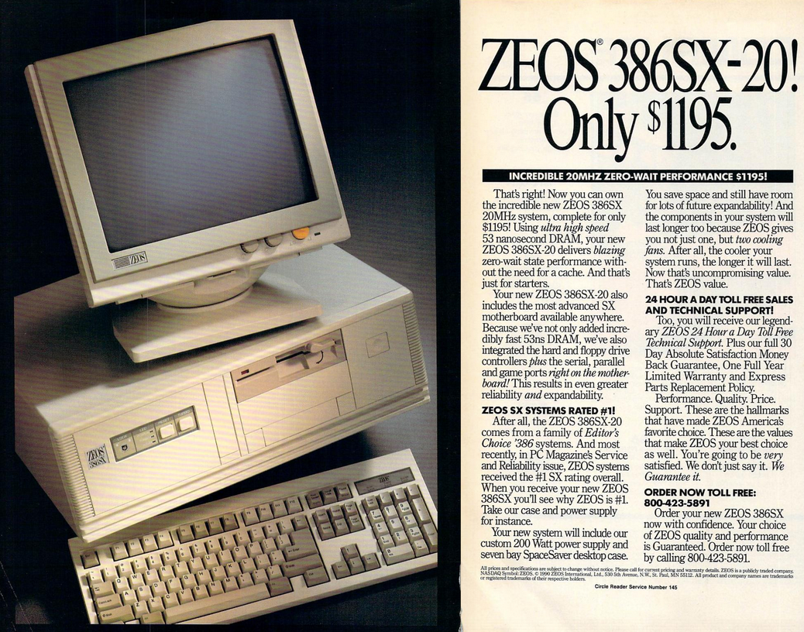1997
Microsoft invests $150 million in Apple, which was struggling at the time, ending Apple's court case against Microsoft in which it alleged that Microsoft copied the "look and feel" of its operating system.
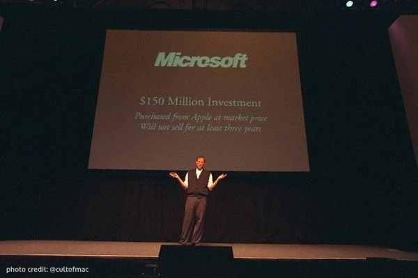2001
Apple unveils the Mac OS X operating system, which provides protected memory architecture and pre-emptive multi-tasking, among other benefits. Not to be outdone, Microsoft rolls out Windows XP, which has a significantly redesigned GUI.
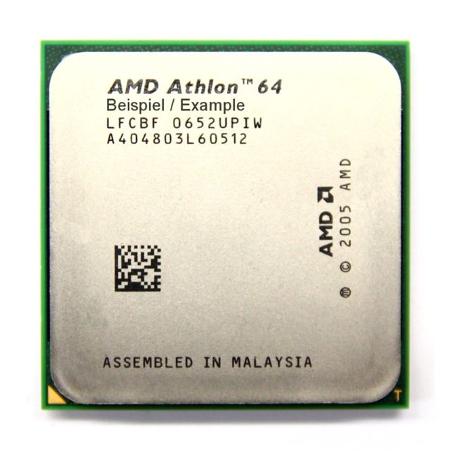2003
The first 64-bit processor, AMD's Athlon 64, becomes available to the consumer market.
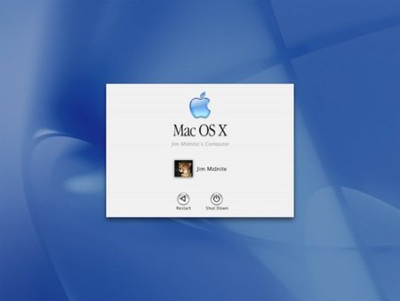2006
Apple introduces the MacBook Pro, its first Intel-based, dual-core mobile computer, as well as an Intel-based iMac. Nintendo's Wii game console hits the market.
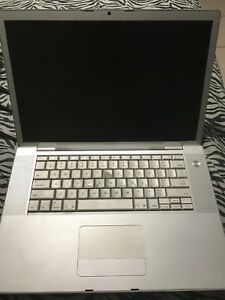2016
The first reprogrammable quantum computer was created. "Until now, there hasn't been any quantum-computing platform that had the capability to program new algorithms into their system. They're usually each tailored to attack a particular algorithm," said study lead author Shantanu Debnath, a quantum physicist and optical engineer at the University of Maryland, College Park.
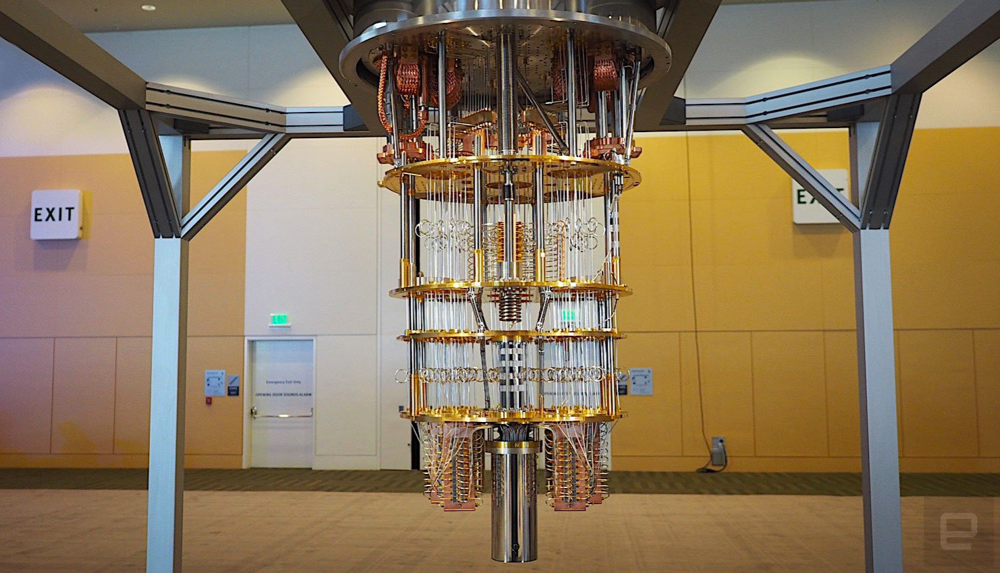2017
The Defense Advanced Research Projects Agency (DARPA) is developing a new "Molecular Informatics" program that uses molecules as computers. "Chemistry offers a rich set of properties that we may be able to harness for rapid, scalable information storage and processing," Anne Fischer, program manager in DARPA's Defense Sciences Office, said in a statement. "Millions of molecules exist, and each molecule has a unique three-dimensional atomic structure as well as variables such as shape, size, or even color. This richness provides a vast design space for exploring novel and multi-value ways to encode and process data beyond the 0s and 1s of current logic-based, digital architectures."
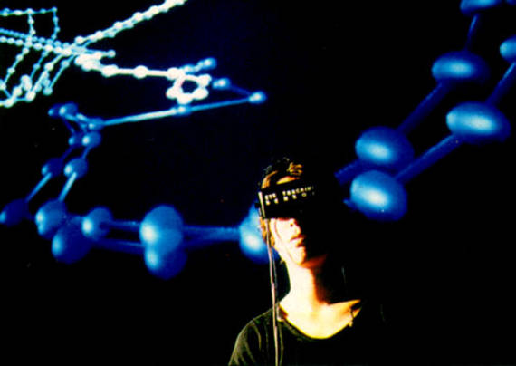